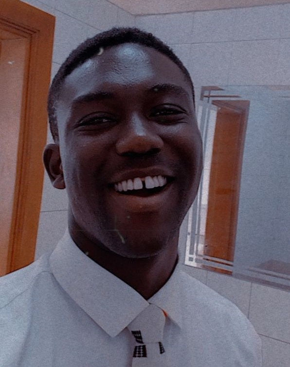

Benjamin Oluwasijibomi Akinwunmi| WDD 130
Hi! My name is Benjamin Akinwunmi. I am from southwestern Nigeria. I enjoy roadtrips, writing music, and I am growing my love for coding with all the learning I can do.
Hi! My name is Benjamin Akinwunmi. I am from southwestern Nigeria. I enjoy roadtrips, writing music, and I am growing my love for coding with all the learning I can do.